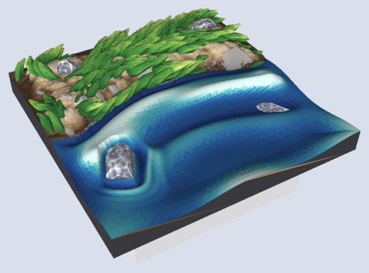

Write a few lines. Print the terrain.
dharmatiles turns a short text file into a 3D-printable terrain tile for tabletop games: ground, grass, rocks, cliffs, water, walls and trees, on a 35 mm DungeonBlocks or 25.4 mm OpenLOCK base, printable on a home FDM printer without supports. The file is a .dtile document, and this site is the reference for its language.
// my-pond.dtile
tile pond size="1x1" seed=97 {
line shore wobble=5 { through "0,0.38" "1,0.42" }
region pool { bounded-by shore; fill "0.5,0.25" }
region bank { bounded-by shore; fill "0.5,0.75" }
stack {
dirt in=bank
grass in=bank
ground in=pool level="water - 2.2"
scatter in=pool count=2 { rock size="6..10" }
water
}
}
lib:tiles/water/1x1-water+grass.dtile.A first tile
A line divides the tile, regions name its sides, and the stack says what goes where: dirt and grass on the bank, a ground bed, two rocks and water in the pool. Sizes are millimetres at the 35 mm square; the OpenLOCK build scales them for you.
| To | Run |
|---|---|
| Build it (DungeonBlocks) | dharmatiles build my-pond.dtile → out/db/my-pond-db.stl |
| Build it for OpenLOCK, with preview images | dharmatiles build my-pond.dtile --system ol --png |
| Watch it in the browser as you edit | dharmatiles preview my-pond.dtile --open |
| Browse your tiles and the library | dharmatiles on its own, or dharmatiles preview --open (your tiles live in ~/dharmatiles, or set DT_HOME; name folders to browse those instead) |
| Check it without building | dharmatiles check my-pond.dtile |
| Build every library tile | dharmatiles build --all --system both |
| List the elements and their controls | dharmatiles elements, dharmatiles elements cliff |
Every tile passes a printability gate before it is written: watertight, nothing lost, and no overhang past 55° (55–65° allowed in small patches, past 65° fails). Print it base down, with no supports; see printing.
Install
There are no prebuilt downloads yet. You need Rust and git:
git clone https://github.com/shawn-vincent/dharmatiles.git
cd dharmatiles
cargo build --release # a few minutes, once
./target/release/dharmatiles elements # it works: lists the elementsRun it from inside the checkout and it finds the library (lib:tiles/…, use "parts/grass") by itself. To run it from anywhere, put target/release on your PATH and set DT_LIBRARY to the checkout's library folder. Output goes to an out/ folder where you run it (or --out): out/db/ for DungeonBlocks, out/ol/ for OpenLOCK.
Making your own tile
- Start from a library tile. Copy one that is close to what you want:
cp library/tiles/water/1x1-water+grass.dtile my-pond.dtile. The elements pages list which library tiles use each element. - Open the preview.
dharmatiles preview my-pond.dtile --openshows the tile in your browser, painted, with overhangs in red. It rebuilds every time you save, and shows a mistake at its line. - Edit. Change a control, add an element, move a line. Each element's page lists every control it takes; the preview's stack line links each entry to its page. Change
seed=for another version of the same tile. - Build.
dharmatiles build my-pond.dtilefor DungeonBlocks,--system olfor OpenLOCK,--3mffor a 3MF painted by material, ready for a multi-colour printer (a Bambu Studio project with its filament slots when you give it a template). - Print base down, no supports.
The reference
- The languageHow a document is written: syntax, units and levels, edges, points, lines and regions, placement, parts, and errors.
- ElementsEvery element a document can write, one page each: what it makes, screenshots, an example, every control (generated from the program), its rules, and how it is made.
- Composing a tileHow elements share a tile: rocks bedded in the ground, grass growing up to them, and tiles that meet their neighbours.
- Tile systemTile, square and cell; the DungeonBlocks and OpenLOCK bases; file names; edges.
- PrintingThe printer profile, the overhang limit, red overhangs in renders, and the audit every build passes.
- PreviewThe live painted view in your browser: running it, what it shows, the keys, and live rebuilds.
- RulesWhat every tile and every build keeps: the printability gate, the edge level, determinism, and where each element's own rules are.
- Visual systemThe colours, type, plate and controls the site and the preview share, and the rules for adding to them.
- RoadmapEverything outstanding: not built, short of its target, failing, ideas, and open questions.
- The editorThe design for editing a tile in the preview: select, change and place on the tile itself, with the text, the stack and an assistant.
Elements
 dirt · groundBare earth with clods, grit and half-sunk pebbles over gentle rises.
dirt · groundBare earth with clods, grit and half-sunk pebbles over gentle rises.
 grass · flowers · reedsSeparate sculpted blades in tufts, parting round patches of bare earth.
grass · flowers · reedsSeparate sculpted blades in tufts, parting round patches of bare earth.
 rock · stone · boulder · pebbleChiselled stones, alone or scattered, bedded in the ground.
rock · stone · boulder · pebbleChiselled stones, alone or scattered, bedded in the ground.
 cliffA storey-high band or mass of broken rock, with scree at its foot.
cliffA storey-high band or mass of broken rock, with scree at its foot.
 waterSculpted water: swells off the shore and chop round rocks.
waterSculpted water: swells off the shore and chop round rocks.
 wall · floorCut stone, fieldstone and brick walls on a tile edge, and stone floors.
wall · floorCut stone, fieldstone and brick walls on a tile edge, and stone floors.
 treeA barked, forking trunk and clumps of foliage covered in separate leaves.
treeA barked, forking trunk and clumps of foliage covered in separate leaves.

All elementstile, levels, line, region, stack, use, define, scatter, the bases and the library files.Status
What the program does today, and what is not built yet. Everything outstanding is on the roadmap, and the editor the preview is becoming is in its design.
| Works | Not built yet |
|---|---|
| Every element on the elements pages builds: ground, dirt, grass, reeds, flowers, water, rocks and scatter, trees, walls, floors and cliffs. | A line's width=, and building along= a drawn line (walls, paths, surfaces). check names the lines; build refuses them. |
| DungeonBlocks and OpenLOCK bases from one document; STL, a 3MF painted by material (a Bambu Studio project with a template), and PNG views. | Doors, windows and hatches in walls. |
The preview, watch, and the whole library (build --all --system both). | Prebuilt downloads, and builds for Linux and Windows. |
Extras
- ExtrasNot terrain: a paint organizer and its stand, and two helpers for looking at STL files.